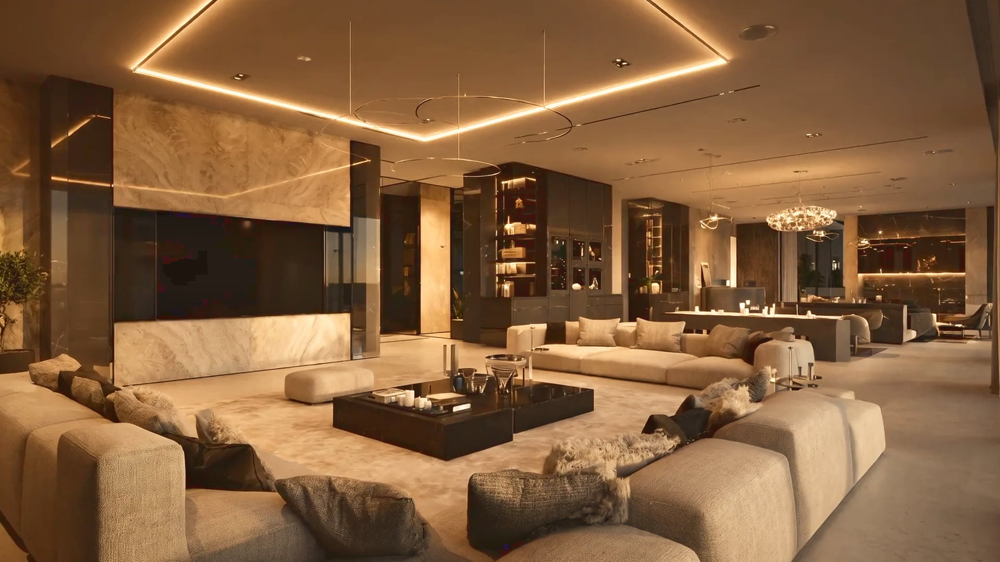

Karen El-Khazen
Interior architecture as a single act of authorship: the plan, the light, the material and the last object, decided together and carried through to delivery.

A decade of interior architecture
- 01Interior architecture
- 02Creative direction
- 03Project delivery
- 04International projects
- 05Residential, hospitality and commercial
Karen El-Khazen founded Karen K Sanctuaries in Dubai in 2015 and leads the studio as its creative director. Her practice treats interior architecture as one continuous discipline: the planning of space, the direction of light, the selection of material and the delivery of the finished work are decided by the same hand.
Over more than a decade the studio has taken on private residences, transformations of existing properties, and hospitality and commercial interiors in the UAE and internationally. Karen directs each project personally, from the first survey through technical design and procurement to site direction and handover.
Her approach begins with the plan rather than the finish. Proportion, sequence and daylight are settled first; materials are then chosen in hand and tested in situ, so that every room reads as a whole rather than a collection of choices. The result is work that is calm, precise and unmistakably made for the people who live and work in it.
Karen works between Dubai, London, Miami, Beirut and Ibiza, collaborating with architects, engineers, makers and artisans wherever a project requires.

Let’s make it personal.
Every project starts with understanding the person, place and ambition behind it.
Start a project